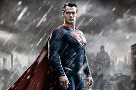
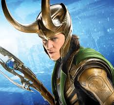

He is not a human, infact he is an alien from other planet. That is why he has such a different type of powers. One of these powers is that, he can look beyond the walls. Second, he emits a laser from his eyes, which can burn almost anything.
He is not actually a Superhero in fact he is a rich personality of Gotham. He is so much familiar with technical and scientific stuff, that he had made his own car, bike and even a flight. One of the villain that always comes-around in the batman way is Joker.

He is the elder son of Odinson, the king of Asgard. Apart from his Great strength and Godly abilities, he also has a hammer, commonly known as Mjolnir. The best thing about that hammer is the only Thor can lift it and nobody else.

He is an engineer, who was struck by alpha-rays. He is a normal human-being on simple days but when his anger gets out of the limit, he turns into giant green colored creature. That’s why he is called as Hulk.

He is one of the Richest Scientist in that Universe. He is also an Engineer, who had built his own war-machines commonly known as Iron suits. Until now there are around 50 suits. He is the son of Man, who had given captain America his shield.

He is the First Avenger, whose age is around 100years. When he was 21, he had been injected with a Super-Serum, which gave him such immense amount of strength. The serum also made him almost invincible because his healing abilities are at zenith. He has a shield which is made up of Admandium. Admandium is one of the most powerful Metal in that universe.

I’m not actually sure that Loki is a superhero or a villain, but he is indeed an alien with superpowers. One of the best powers of Loki is that he can control anybody’s mind and he can also fake his own appearance. He is the brother Thor and second son of Odinson.
The superhero with extreme healing abilities. He is one of the eldest member of X-men group. He has metal claws situated at the middle of all four fingers of both hands. His body does not contain bone but is made up of all vibranium body. Vibranium is the strongest metal known in that universe.